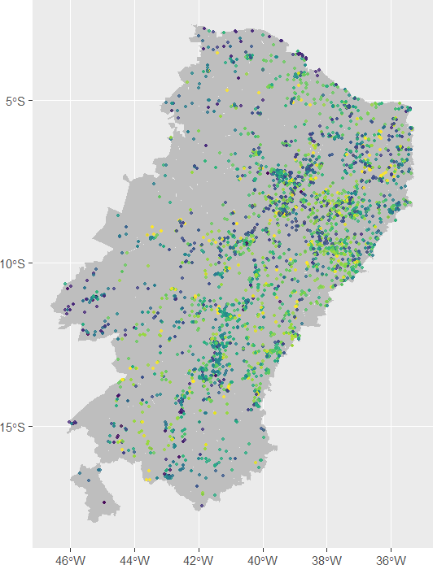
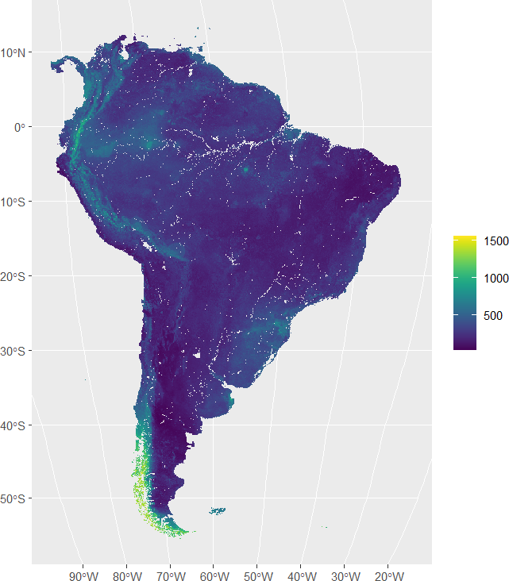
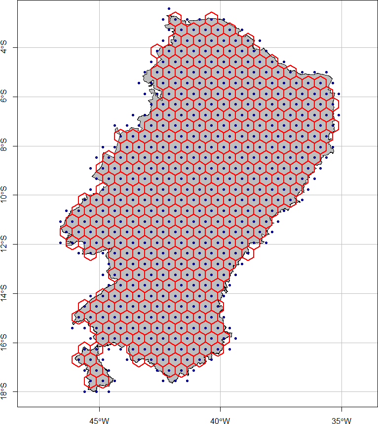
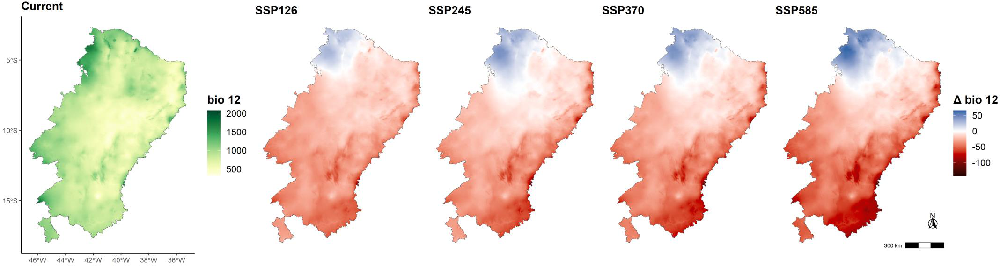

Climate change and the availability of wild food plants in the semiarid
A. Magalhães & D. Vartanian
University of São Paulo
2024-10-23
Hi there! üëã
In this presentation, we will delve into the insightful article by Silva et al. (2024) titled: Climate change may alter the availability of wild food plants in the Brazilian semiarid. This research opens up important discussions about the future of essential resources under the pressures of climate change.
We will cover the following topics:
- Introduction
- Methods
- Results & Discussion
- Conclusion
(Artwork by Melo & Voltolini, 2019)
The authors
(Photos provided by the authors in their CNPQ’s Lattes curricula)
Introduction
Question
What will be the future availability of nutritionally and economically important WFP species in the Brazilian semiarid?
Wild food plants
Wild food plants (WFPs) are defined as plant species that grow spontaneously in natural or seminatural ecosystems, have self-sustaining populations, and are collected for human consumption as food or drink in rural and urban environments (Heywood, 1999; Reyes-García et al., 2015; Shackleton & de Vos, 2022).
A Goiaba-do-morro (Psidium guineense).
B Jenipapo (American genipa).
C Taioba/Costela-de-adão/Orelha-de-elefante (Xanthosoma sagittifolium).
D Cará-roxo (Dioscorea trifida).
(Photo by Medeiros et al., 2021 (Murici, Alagoas, Brazil))
The Brazilian semiarid
(Artwork by Silva et al., 2024)
Shared Socioeconomic Pathways
The SSPs are based on five narratives describing alternative socio-economic developments. Their main purpose is to provide an internally consistent logic of the main causal relationships, including a description of trends that are traditionally difficult to capture by models (Riahi et al., 2017).
- SSP1: Sustainability – Taking the Green Road
- Low challenges to mitigation and adaptation.
- SSP2: Middle of the Road
- Medium challenges to mitigation and adaptation.
- SSP3: Regional Rivalry – A Rocky Road
- High challenges to mitigation and adaptation.
- SSP4: Inequality – A Road Divided
- Low challenges to mitigation, high challenges to adaptation.
- SSP5: Fossil-fueled Development ― Taking the Highway
- High challenges to mitigation, low challenges to adaptation.
(Summary of SSP narratives by Riahi et al. (2017, p. 157, Table 2))
Shared Socioeconomic Pathways
(Artwork by Our World in Data using using data from Riahi et al. (2017))
Shared Socioeconomic Pathways
(Artwork by Nazarenko et al., 2022)
Methods
Selection and identification of species
Sources:
- IBGE Agricultural Census: “plant extraction”, “semiarid”, and “family farming” (Instituto Brasileiro de Geografia e Estatística, 2022).
- Plants with potential for human consumption as food (Jacob et al., 2020) (systematic review).
All species that were cited by three or more articles present in Jacob et al. (2020). 11 species in the first database and 17 species in the second.
All 27 selected species are native to Brazil, 11 are endemic to Brazil, and 3 are endemic to Brazil and restricted to Caatinga.
(Logo from the 2017 IBGE Agricultural Census)
Selection of occurrence records
Occurrence records of the species in the Global Biodiversity Information Facility (GBIF) database.
Selected records with geographical coordinates and dates from 1970 to 2021 (collected in January 2022), to coincide with the period of the bioclimatic variables (Silva et al., 2024).
Distribution of the wild food plant (WFP) species studied in the Brazilian semiarid region (Silva et al., 2024).

(Artwork by Daniel Vartanian)
Selection of env. predictor variables
Climate data from the WorldClim 2.1 database, which compiles interpolated data from weather stations worldwide (Fick & Hijmans, 2017; Harris et al., 2020).
Future projections are informed by multiple climate models and various SSPs, providing data at several spatial resolutions for a detailed representation of climate variables.
Projected monthly average maximum temperatures (°C) for June 2021–2040, based on the global climate model (GCM) ACCESS-CM2.

(Artwork by Daniel Vartanian)
Selection of env. predictor variables
Soil data from the SoilGrids database, which is based on a global compilation of soil profile data (WoSIS) and environmental layers.
It takes as inputs soil observations from about 240,000 locations worldwide and over 400 global environmental covariates describing vegetation, terrain morphology, climate, geology and hydrology (Poggio et al., 2021).
Soil total nitrogen concentration (in cg/kg) at a depth of 0-5 cm for each 5000 m cell, based on the latest release of the SoilGrids database (May 2020).

(Artwork by Daniel Vartanian)
Bioclimatic variables
Bioclimatic variables are derived from the monthly temperature and rainfall values in order to generate more biologically meaningful variables. These are often used in species distribution modeling and related ecological modeling techniques (WorldClim, n.d.).
(Artwork by Arthur Ramalho Magalhães)
Habitat suitability modeling
Response variable (Occurrences of plant species) \(+\) Predictor variables (Bioclimatic and soil variables) \(=\) Suitability map
80% training & 20% testing
(Artwork by Silva et al., 2024)
Habitat suitability modeling
Maxent (Maximum entropy) is an application for modelling species geographic distributions.
Data on occurrence \(+\) Environmental variables \(+\) Random background points \(=\) Predict where a species is likely to be found
Result: A probability map, where each location on the map is assigned a value that indicates the likelihood of the species living there.
Habitat suitability modeling
The Maxent algorithm compares the environmental conditions at presence points with background points and tries to identify a pattern.
(Artwork by Arthur Ramalho Magalhães)
Habitat suitability modeling
As a result, a map is obtained showing the probabilities of that species occurring in that location.
With the model ready, the test 20% can be used to evaluate the model.
This evaluation allows for the selection of the best models.
Habitat suitability map for Annona crassiflora (Marolo/Pinha-do-cerrado). Suitability surfaces are presented within the known extent of occurrence (EOO) and clipped by the Semiarid region. Blank areas represent locations where species have no known occurrence (extend beyond the EOO).
(Artwork by Silva et al., 2024)
Habitat suitability modeling
After the model was generated, it was projected into the future under different scenarios.
Projections of the predictor variables for the future.
Habitat suitability map for Annona crassiflora (Marolo/Pinha-do-cerrado). Suitability surfaces are presented within the known extent of occurrence (EOO) and clipped by the Semiarid region. Blank areas represent locations where species have no known occurrence (extend beyond the EOO).
(Artwork by Silva et al., 2024)
Geographical distribution
Based on the optimal sensitivity and specificity ― Threshold that best defines the ‘presence’ area (Binarization).
After that, the relative loss (RG) and relative gain (RL) of potential area were calculated.
(Artwork by Arthur Ramalho Magalhães)
Species richness and composition
A hexagonal grid of 0.5 degrees (in red, ~55.6 km) is used for delineating communities.
The gray map represents the spatial extent of the Brazilian Semiarid region. The blue dots represent the centroids of the hexagons.
Species number == Richness.
Species identity == Composition.
Species composition per grid.

(Artwork by Silva et al., 2024)
Species richness and composition
The hex grid was superimposed on the geographical distribution polygons of each species, and species richness was estimated by the sum of the number of species found in each hexagon for each climate scenario (current and future).
(Artwork by Silva et al., 2024)
Species richness and composition
The hex grid was superimposed on the geographical distribution polygons of each species, and species richness was estimated by the sum of the number of species found in each hexagon for each climate scenario (current and future).
(Artwork by Arthur Ramalho Magalhães, based on images extracted from Silva et al. (2024))
Species richness and composition
The hex grid was superimposed on the geographical distribution polygons of each species, and species richness was estimated by the sum of the number of species found in each hexagon for each climate scenario (current and future).

(Artwork by Silva et al., 2024)
Species richness and composition
Spatial Beta Diversity quantifies the difference in species composition between a focal cell and the surrounding cells.
Temporal Beta Diversity quantifies the difference in species composition between a focal cell and the same cell in a future scenario.
(Artwork by Silva et al., 2024)
Bioclimatic variation
Projections of the predictor variables for the future.
Annual precipitation in the Brazilian Semiarid region for the current scenario (represented on a yellow-green scale) and the same but across four future climate change projections (represented on a red-white-blue scale). The current scenario considers the historical climate of the period 1970-2000. The projected climate changes are for the period 2041-2060
(Artwork by Silva et al., 2024)
Results & Discussion
Variations in geographical dist.
(Artwork by Silva et al., 2024)
Variations in geographical dist.
Lost area, gained area, and intersection area in the geographic distribution of Acrocomia aculeata (within the semiarid region) in the four future climate change projections (period 2041-2060). The lost area (in red) and gained area (in green) are relative to the current projected distribution area of the species. The intersection area (in grey) represents the distribution area maintained between current and future scenarios.
(Artwork by Silva et al., 2024)
Variations in geographical dist.
Lost area, gained area, and intersection area in the geographic distribution of Dipteryx alata (within the semiarid region) in the four future climate change projections (period 2041-2060). The lost area (in red) and gained area (in green) are relative to the current projected distribution area of the species. The intersection area (in grey) represents the distribution area maintained between current and future scenarios.
(Artwork by Silva et al., 2024)
Variations in species richness
(Artwork by Silva et al., 2024)
Variations in species composition
(Artwork by Silva et al., 2024)
Variations in species composition
(Artwork by Silva et al., 2024)
Variations in species composition
(Artwork by Silva et al., 2024)
Variations in species composition
(Artwork by Silva et al., 2024)
Conclusion
Question
What will be the future availability of nutritionally and economically important WFP species in the Brazilian semiarid?
Conclusion
The species with the highest projected losses in climatically suitable areas were those that contribute substantially to the income of local populations.
Some species will expand their range, being more tolerant to global changes, and can be used to replace this loss of food species.
In addition to climate change, other threats can contribute to reductions in the geographical distribution of species, such as changes in land use and unsustainable extraction.
Closing remarks


This presentation was created using the Quarto Publishing System. Code and materials are available on GitHub.
We would like to express our gratitude to Amanda Silva for her guidance and the opportunity to present this insightful work.

(Artwork by Allison Horst)
References
In accordance with the American Psychological Association (APA) Style, 7th edition.
Thank you!

(Artwork by Allison Horst)
Appendices
(AP) Run to the poles!
(Artwork by Intergovernmental Panel on Climate Change, 2023)
(AP) Run to the poles!
(AP) Average temprature anomaly
(Artwork by Our World in Data using using data from Morice et al. (2021))
(AP) Robustness
The order in complex systems is said to be robust because, being distributed and not centrally produced, it is stable under perturbations of the system (Ladyman et al., 2013).
(Graph by The Copernicus Climate Change Service)
(AP) Equilibrium states
Systems in a highly stable state (deep valley) have low potential energy, and considerable energy is required to move them out of this stable state. Systems in an unstable state (top of a hill) have high potential energy, and they require only a little additional energy to push them off the hill.

(AP) Leverage points
There are places within a complex system where a small shift in one thing can produce big changes in everything (D. Meadows, 1999).
Leverage points are points of power (D. H. Meadows, 2008).
Possible states, even if unlikely: by modelling such interactions, it can suggest that properties exist in the system that had not been noticed in the real world situation (Dodig-Crnkovic & Giovagnoli, 2013).